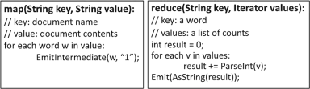

Programming Model
The MapReduce model is a specialisation of the split-apply-combine strategy for data analysis (Wickam, 2011). The
name draws its inspiration from the map and reduce functions commonly used in functional
programming language like Lisp.
The computation takes a set of input key/value pairs of data with a type in one data domain and
produces a set of output key/values pairs in a different domain. The user of the MapReduce library
has to define the two functions at the core of its computation: Map and Reduce (Jeffrey Dean, Sanjay Ghemawat, 2004).
- Map takes an input pair and produces a set of intermediate key/values pairs. The
MapReduce library groups together all intermediate values associated with the same
intermediate key I and passes them to the Reduce function.
- The Reduce function accepts an intermediate key I and a set of values for that key. It
merges together these values to form a possibly smaller set. Tipically just zero or one
output value is produced from one Reduce invocation.
The main advantage of this model is that it allows large computations to be easily parallelised and
re-executed to be used as the primary mechanism for fault tolerance.
Example (WordCount)
Figure 1 illustrates an example MapReduce program expressed in pseudo-code for counting the
number of occurences of each word in a collection of documents (Aris Gkoulalas, 2014).

Figure 1 - MapReduce WordCount pseudo-code example
In this example, the map function emits each word plus an associated mark of occurences, while
the reduce function sums together all marks emitted for a particular word.
Implementation
Many different implementation of the MapReduce interface are possible, each one tailored for a
specific problem. In principle, the design of the MapReduce library considers the following main
principles (Aris Gkoulalas, 2014):
- Low-Cost Unreliable Commodity Hardware: Instead of using expensive, high-performance,
reliable symmetric multiprocessing (SMP) or massively parallel processing (MPP) machines
equipped with high-end network and storage subsystems, the MapReduce framework is
designed to run on large clusters of commodity hardware. This hardware is managed and
powered by open-source operating systems and utilities so that the cost is kept low.
- Extremely Scalable RAIN Cluster: Instead of using centralized RAID-based SAN or NAS
storage systems, every MapReduce node has its own local off-theshelf hard drives. These
nodes are loosely coupled in rackable systems that are connected with generic LAN
switches. These nodes can be taken out of service with almost no impact to still-running
MapReduce jobs. These clusters are called Redundant Array of Independent (and
Inexpensive) Nodes (RAIN).
- Fault-Tolerant yet Easy to Administer: MapReduce jobs can run on clusters with thousands
of nodes or even more. These nodes are not very reliable as at any point in time, a certain
percentage of these commodity nodes or hard drives will be out of order. Hence, the
MapReduce framework applies straightforward mechanisms to replicate data and launch
backup tasks so as to keep still-running processes going. To handle crashed nodes, system
administrators simply take crashed hardware off-line. New nodes can be plugged in at any
time without much administrative hassle. There is no complicated backup, restore and
recovery configurations like the ones that can be seen in many DBMS.
- Highly Parallel yet Abstracted: The most important contribution of the MapReduce
framework is its ability to automatically support the parallelization of task executions.
Hence, it allows developers to focus mainly on the problem at hand rather than worrying
about the low level implementation details, such as memory management, file allocation,
parallel, multi-threaded or network programming. Moreover, MapReduce’s shared-nothing
architecture [38] makes it much more scalable and ready for parallelization.
For the sake of argument, we will describe an implementation targeted to the computing
enviroment used at Google: large clusters of commodity PCs connected together with switched Ethernet (Jeffrey Dean, Sanjay Ghemawat, 2004):
- Machines are typically dual-processor x86 processors running Linux, with 2-4 GB of
memory per machine.
- Commodity networking hardware is used – typically either 100 megabits/second or 1
gigabit/second at the machine level, but averaging considerably less in overall bisection
bandwidth.
- A cluster consists of hundreds or thousands of machines, and therefore machine failures
are common.
Ethernet:
- Storage is provided by inexpensive IDE disks attached directly to individual machines. A
distributed file system [8] developed in-house is used to manage the data stored on these
disks. The file system uses replication to provide availability and reliability on top of
unreliable hardware.
- Users submit jobs to a scheduling system. Each job consists of a set of tasks, and is mapped
by the scheduler to a set of available machines within a cluster.
Execution Overview
The MapReduce computations are compositions of two phases (Dimitrov, 2016):
MapPhase: list(k1, v1) -> list(k2, v2)
The framework accepts a list of key / value pairs on input. For each pair, it calls a map that
generates a list of intermediate key / value pair.
The ReductionPhase is subdivided in two subphases:
preparation: list(k2, v2) -> list(k2, list(v2))
In the preparation phase, the framework sorts the lists produced during the previous phase, and the
result is a list of intermediate keys / list of values. In this list, each key is associated with all the
values generated for it.
reduction: list(k2, list(v2)) -> list(k2, v2)
After that, the reduce phase. For every pair in the list, the framework calls the function reduce,
which produces a list of values for the key.
In the Google implementation, the Map calls are distributed across multiple machines by
automatically partitioning the input data into a set of M splits. The input splits can be processed in
parallel by different machines. Reduce invocations are distributed by partitioning the intermediate
key space into R pieces using a partitioning function, usually a hash function (e.g. hash(key) mod
R). However, the number of partitions (R) and the partitioning function are specified by the user.
When the user program invokes the MapReduce function, the following sequence of actions is
executed (Jeffrey Dean, Sanjay Ghemawat, 2004):
- The MapReduce library in the user program first splits the input files into M pieces of
typically 16 megabytes to 64 megabytes (MB) per piece (controllable by the user via an
optional parameter). It then starts up many copies of the program on a cluster of machines
- One of the copies of the program is special: the master. The rest are workers that are
assigned work by the master. There are M map tasks and R reduce tasks to assign. The
master picks idle workers and assigns each one a map task or a reduce task.
- A worker who is assigned a map task reads the contents of the corresponding input split. It
parses key/value pairs out of the input data and passes each pair to the user-defined Map
function. The intermediate key/value pairs produced by the Map function are buffered in
memory.
- Periodically, the buffered pairs are written to local disk, partitioned into R regions by the
partitioning function. The locations of these buffered pairs on the local disk are passed
back to the master, who is responsible for forwarding these locations to the reduce
workers.
- When a reduce worker is notified by the master about these locations, it uses remote
procedure calls to read the buffered data from the local disks of the map workers. When a
reduce worker has read all intermediate data, it sorts it by the intermediate keys so that all
occurrences of the same key are grouped together. The sorting is needed because typically
many different keys map to the same reduce task. If the amount of intermediate data is
too large to fit in memory, an external sort is used.
- The reduce worker iterates over the sorted intermediate data and for each unique
intermediate key encountered, it passes the key and the corresponding set of intermediate
values to the user’s Reduce function. The output of the Reduce function is appended to a
final output file for this reduce partition.
- When all map tasks and reduce tasks have been completed, the master wakes up the user
program. At this point, the MapReduce call in the user program returns back to the user
code.
Figure 2 show the execution of a MapReduce operation in our implementation (Jeffrey Dean, Sanjay Ghemawat, 2004).
 Figure 2 - MapReduce Execution
Figure 2 - MapReduce Execution
When the algorithm terminates, the output of the MapReduce execution is available in the R
output files (one per each reduce task, with file names specified by the user). Typically, users do
not merge these R output files as they are usually passed to another MapReduce call or used by
another distributed application which is able to process input that is partitioned into multiple files.
Figure 3 illustrates the execution of the wordcount example using MapReduce (Aris Gkoulalas, 2014).
 Figure 3 - MapReduce WordCount Execution Example
Figure 3 - MapReduce WordCount Execution Example
Advantages
Easy to use
One of the main advantages of the MapReduce model is that it can be easily used by programmers
who have no experience with parallel and distributed systems (Jeffrey Dean, Sanjay Ghemawat, 2004). Also, the key contributions of the
MapReduce framework are not the actual map and reduce functions, but the scalability and fault-tolerance
achieved for a variaty of applications by optimising the execution engine. As a
consequence, relative improvement can only be seen with multi-threaded implementations.
Fault-tolerance and Determinism
Since it was programmed to tackle massive amounts of data, the MapReduce model must tolerate
machine failures peacefully (Jeffrey Dean, Sanjay Ghemawat, 2004). The master is responsible for scheduling the tasks and tackle workers
failures. For each map task and reduce task, it stores the state (idle, in-progress, or completed),
and the identity of the worker machine (for non-idle tasks). For each completed map task, the
master stores the locations and sizes of the R intermediate file regions produce by the map.
MapReduce is resilient to large-scale worker failure. The master pings every worker periodically
and if it does not respond after a reasonable amount of time it is marked as failed. Any map tasks
completed by a failed worker are simply re-executed in order to make progress. If the master fails,
the job must be re-executed from scratch.
Another important aspect of the MapReduce model is ist determinism (Dimitrov, 2016). Since map and reduce
function may be deterministic regarding their inputs, the framework guarantees that the program
will generate the same output each time. Furthermore, when user-defined functions are
nondeterministic, the framework assures that for each distributed execution, there exist at least
one sequential execution that can produce the same output.
Locality and Backup Tasks
Since network bandwidth is a relatively scarce resource in a distributed system the MapReduce
model takes advantage of the fact that the input data is stored on the local disks of the machines
that make up the cluster (Jeffrey Dean, Sanjay Ghemawat, 2004). The MapReduce master takes the location information of the input files
into account and attempts to schedule a map task on a machine that contains a replica of that
input’s task data, or near a replica of that task’s input data. This way, most input data is read
locally and consumes no network bandwidth. Furthermore, when a MapReduce operation is close
to completion, the master schedules backup executions of the remaining in-progress tasks. The
task is marked as completed whenever either the primary or the backup execution completes, so
that if a machine takes an unusual time to complete a task, it does not slow down the entire
process.
Disadvantages
One of the main disadvanteges of the MapReduce model is not being suitable for real time
processing. MapReduce is a useful tool for batch processing, a process in which data is first
collected over a period of time, then processed by a separated program and finally is retrieved.
However, these steps usually require a reasonable amount of time, which is a tradeoff to their
powerful performances. For this very reason, it is clear that a MapReduce solution would not be
feasible to get data processed and retrieved in real time. Furthermore, every map task performed
by each worker must be independent from the other, that is there must be no dependency
between intermediate processes (job isolation).
Refinements and Variations
Although the basic functionality provided by MapReduce is sufficient for most needs, there are a
few extension which could be useful (Jeffrey Dean, Sanjay Ghemawat, 2004):
Partitioning Function
Despite data being partitioned across the tasks using a default partitioning function (usually a
hashing function) this variation allows the user to define a custom partitioning function, as well as
map and reduce functions, to split data according to specific needs. For example, sometimes the
output keys are URLs, and we want all entries for a single host to end up in the same output file.
Combiner Function
In some cases, there is significant repetition in the intermediate keys produced by each map task
(like in the wordcount example). An interesting variation is used to allow the user to specify an
optional Combiner function that does partial merging of this data before it is sent over the
network. Typically the same code is used to implement both the combiner and the reduce
functions. Furthermore, it significantly speeds up certain classes of MapReduce operations.
Map-Reduce-Merge
One of the main limitation of the MapReduce framework is that it does not provide any method to
join multiple datasets in one task. However, this could still be achieved by introducing an
additional MapReduce step. In this new model, the map function transforms an input key/value
pair (k1, v1) into a list of intermediate key/value pairs [(k2, v2)] (Hung-chih Yang, Ali Dasdan, Ruey-Lung Hsiao, D. Stott Parker, 2007). The reduce function aggregates
the list of values [v2] associated with k2 and produces a list of values [v3], which is also associated
with k2. Note that inputs and outputs of both functions belong to the same lineage, say α. Another
pair of map and reduce functions produce the intermediate output (k3, [v4]) from another lineage,
say β. Based on keys k2 and k3, the merge function combines the two reduced outputs from
different lineages into a list of key/value outputs [(k4, v5)]. This final output becomes a new
lineage, say γ. If α = β, then this merge function does a self-merge, similar to self-join in relational
algebra. This could be useful for relational data processing on large clusters.
Real-World Examples
Despite being created by Google, the MapReduce model has been adopted by many other
companies. Nowadays, it has been used across a wide range of domains such as (P. Sudha, Dr. R. Gunavathi, 2016):
- Large-scale machine learning problems
- clustering problems for the Google News and Froogle products
- extracting data to produce reports of popular queries(e.g. Google Zeitgeist and Google
Trends)
- extracting properties of web pages for new experiments and products (e.g. extraction of
geographical locations from a large corpus of Web Pages for localized search)
- processing of satellite imagery data
- Language model processing for statistical machine Translation
- Large-scale graph computations
One of the most widespread and used implementation is Apache Hadoop.
Further information regarding practical examples can be found here.
References
Wickham, Hadley (2011). "The split-apply-combine strategy for data analysis". Journal of Statistical Software
MapReduce: Simplified Data Processing on Large Clusters, by Jeffrey Dean and Sanjay Ghemawat; from Google
Research
Aris Gkoulalas-Divanis, Large-Scale Data Analytics, Abderrahim Labbi Editors
The Performance of MapReduce: An In-depth Study, Dawei Jiang, Beng Chin Ooi, Lei Shi, Sai Wu, School of
Computing National University of Singapore
Encyclopedia of Cloud Computing, Vladimir Dimitrov, University of Sofia, Bulgaria
A Survey Paper on Map Reduce in Big Data, P. Sudha, Dr. R. Gunavathi, Sree Saraswathi Thyagaraja College
Map-Reduce-Merge: Simplified Relational Data Processing on Large Clusters, Hung-chih Yang, Ali Dasdan,
Yahoo!, Ruey-Lung Hsiao, D. Stott Parker, Computer Science Department, UCLA